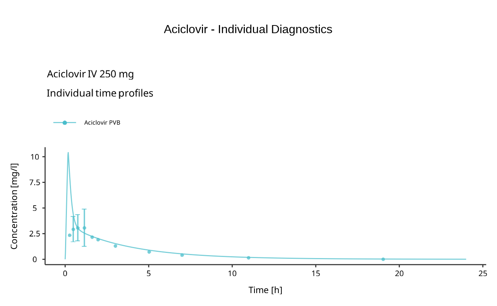
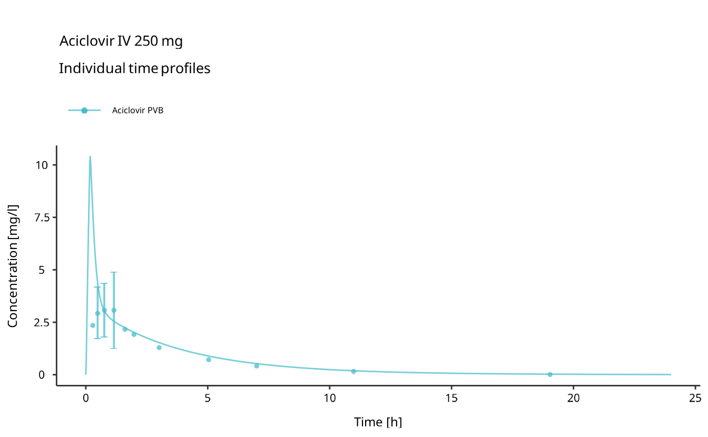
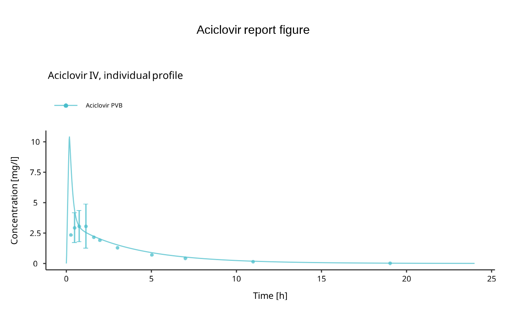

Clear, consistent figures are a core part of model diagnostics and of any client-facing report. This article shows how to turn scenario results into figures with esqlabsR: first the plots a project already defines, then how to author your own, attach observed data, apply the esqLABS house style, and export to a file.
Every figure below runs against the example project bundled with the package; loading it and running one scenario produces them all.
The plotting model
esqlabsR describes figures with three building blocks that recur throughout this article.
- A DataCombined pairs one or more simulated curves with optional observed data. It is the data input for a chart: it says which scenario output and which observed data belong together, and it can carry per-curve transformations (offsets, scale factors).
- A Plot describes a single chart: its Plot Type, the DataCombined it draws from, and its axis, aggregation, and styling settings.
- A Plot Grid composes one or more Plots into one laid-out figure (a multi-panel arrangement). A Plot is usually rendered as a panel inside a Plot Grid, but can also be rendered on its own (see below).
A project stores all three as definitions under
definitions/data-combined/,
definitions/plots/, and
definitions/plot-grids/, so the figures travel with the
project. You can also assemble them yourself in R, which is covered
below.
Load the example and run a scenario
Every figure in this article is built from the results of one
simulated scenario. Author against a writable copy of the example so the
figures you add later do not change the installed package:
initProject() scaffolds a fresh copy in a temporary
directory, which you load and run the aciclovir_iv scenario
against.
project_dir <- withr::local_tempdir()
initProject(destination = project_dir, type = "example", createExcel = FALSE)
project <- loadProject(file.path(project_dir, "Project.json"))
scenarioResults <- runScenarios(
project,
scenarios = "aciclovir_iv"
)The first runScenarios() call in a session initializes
PK-Sim and is slow; later runs are fast. scenarioResults is
keyed by scenario name; pass it to any plotting function below.
Generate a project’s predefined plots
The example project already defines a DataCombined
(aciclovir_individual), a Plot
(p1, of type individual), and a Plot
Grid (individual_diagnostics).
createPlots() reads those definitions and builds the
figures, resolving each DataCombined against the
scenario results you pass in.
plotGrids <- createPlots(project, scenarioResults = scenarioResults)Despite its name, createPlots() returns Plot
Grids, not single Plots: the returned list is
keyed by the project’s Plot Grid names.
plotGrids$individual_diagnostics
To build only a subset of the project’s grids, pass their names to
plotGrids.
someGrids <- createPlots(
project,
plotGrids = "individual_diagnostics",
scenarioResults = scenarioResults
)To render a single Plot on its own, without wrapping
it in a grid, pass its id to plots. The result is keyed by
the plot’s id, and the entry is a single ggplot object
rather than a patchwork grid.
single <- createPlots(
project,
plots = "p1",
scenarioResults = scenarioResults
)
single$p1
plotGrids and plots are independent
selectors, so you can request grids and standalone plots in the same
call.
Attach observed data
Comparing simulated curves against measurements is what makes a
diagnostic figure useful. A project declares its observed data and
resolves it on demand; how observed data enters a project (the four
source types, the source definitions, and
loadObservedData()) is covered in
vignette("observed-data"). For plotting, you need just one
handle: the DataSet name a
DataCombined references, which
getObservedDataNames() lists.
getObservedDataNames(project)
#> [1] "Laskin 1982.Group A_Aciclovir_1_Human_MALE_PeripheralVenousBlood_Plasma_2.5 mg/kg_iv_"Read this name from getObservedDataNames() rather than
typing the long, fully qualified Excel name by hand. The predefined
aciclovir_individual DataCombined already
pairs the simulated curve with it, which is why the figure above
overlays measurements on the prediction. Reference the same name when
you author your own DataCombined.
Author your own figures
Beyond a project’s predefined figures, you can describe new ones in R
with addDataCombined(), addPlot(), and
addPlotGrid(). Like every authoring function, these edit
the project in memory; saveProject() then writes each
definition to the project’s definitions/data-combined/,
definitions/plots/, or definitions/plot-grids/
folder. Because you scaffolded a writable copy above, a save lands in
the temporary project, not the installed package.
First, define a DataCombined that pairs the
simulated peripheral-venous-blood curve with the observed data. Curves
that share a group are plotted together.
observedName <- getObservedDataNames(project)[1]
addDataCombined(
project,
id = "aciclovir_report",
simulated = list(list(
label = "Aciclovir simulated",
scenario = "aciclovir_iv",
path = "Organism|PeripheralVenousBlood|Aciclovir|Plasma (Peripheral Venous Blood)",
group = "Aciclovir PVB"
)),
observed = list(list(
label = "Aciclovir observed",
dataSet = observedName,
group = "Aciclovir PVB"
))
)Next, describe a Plot that draws from this
DataCombined. The plotType selects the
kind of chart:
-
individualplots a time profile for an individual scenario. -
populationplots a time profile for a population scenario; itsquantilesfield (which applies only to population plots) controls the displayed percentile bands. -
observedVsSimulatedplots simulated against observed values. -
residualsVsSimulatedplots residuals against simulated values. -
residualsVsTimeplots residuals against time.
Any field accepted by a plot configuration can be passed through
..., for example a title or an axis unit.
addPlot(
project,
id = "aciclovir_profile",
dataCombined = "aciclovir_report",
plotType = "individual",
title = "Aciclovir IV, individual profile",
xUnit = "h"
)Finally, compose the Plot into a Plot Grid. A grid can hold a single plot or several; list every plot id you want in the figure.
addPlotGrid(
project,
id = "report_figure",
plots = "aciclovir_profile",
title = "Aciclovir report figure"
)Build the authored grid the same way as the predefined ones.
reportGrids <- createPlots(
project,
plotGrids = "report_figure",
scenarioResults = scenarioResults
)
reportGrids$report_figure
Apply the esqLABS house style
createPlots() already styles figures with the esqLABS
look, so the figures above are house-styled out of the box. When you
build plots more directly, two helpers give you the same configurations
to start from:
-
createEsqlabsPlotConfiguration()returns a plot configuration carrying the esqLABS defaults for fonts, sizes, legend placement, and colors. -
createEsqlabsPlotGridConfiguration()returns the matching grid configuration (panel tags, title sizing, alignment).
plotConfig <- createEsqlabsPlotConfiguration()
gridConfig <- createEsqlabsPlotGridConfiguration()The palette behind that look is esqlabsColors(), which
extrapolates between the esqLABS blue, red, and green for any number of
curves. Use it whenever you need house colors outside the plotting
helpers.
esqlabsColors(3)
#> [1] "#4ABDCB" "#EA5E5E" "#76BB60"Export a finished figure
A Plot Grid is a standard
ggplot/patchwork object, so save it with
ggplot2::ggsave(). Choose the file extension to pick the
format (.png, .pdf, .svg, and so
on) and set the size and resolution to suit your report.
outputDir <- withr::local_tempdir()
ggplot2::ggsave(
filename = file.path(outputDir, "aciclovir_report.png"),
plot = reportGrids$report_figure,
width = 7,
height = 5,
dpi = 300
)To export several figures, loop over the named list that
createPlots() returns and write each grid to its own file,
deriving the file name from the grid name.
Where to go next
The Plot Type charts shown here are produced by
ospsuite’s plotting engine; its DataCombined articles
cover the chart types and their customization in depth, and the
OSPSuite-R observed-data article covers loading measurements from Excel
or PKML. For building and running the scenarios that feed these figures,
see vignette("esqlabsR") and
vignette("run-simulations").